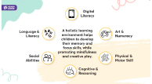

<div class="physical">
  
  <div class="ellipse-3"></div>
  <div class="ellipse-4"></div>
  <div class="ellipse-5"></div>
  <div class="ellipse-6"></div>
  
  <div class="physical2">Physical</div>
  
  <div
    class="a-child-develops-biological-and-physical-functions-including-eyesight-and-motor-skills"
  >
     a child develops biological and physical functions, including eyesight and
    motor skills
  </div>
  <div class="physical-development-in-early-childhood">
    Physical Development In Early Childhood
  </div>
  <div class="physical-development-in-children">
    Physical development in children
  </div>
  <div class="top-3-holistic-development-activities-for-kids">
    Top 3 Holistic Development Activities for Kids
  </div>
  
  
  
</div>
